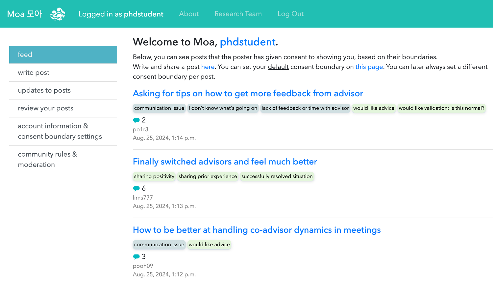
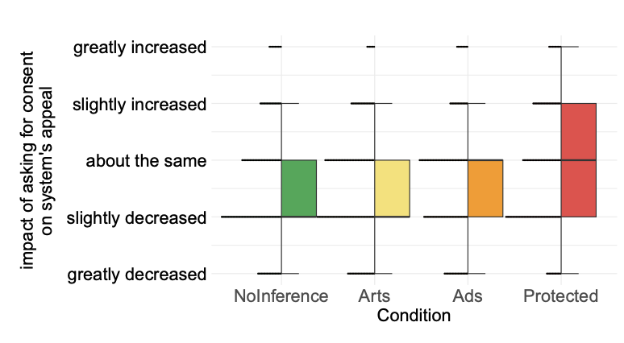
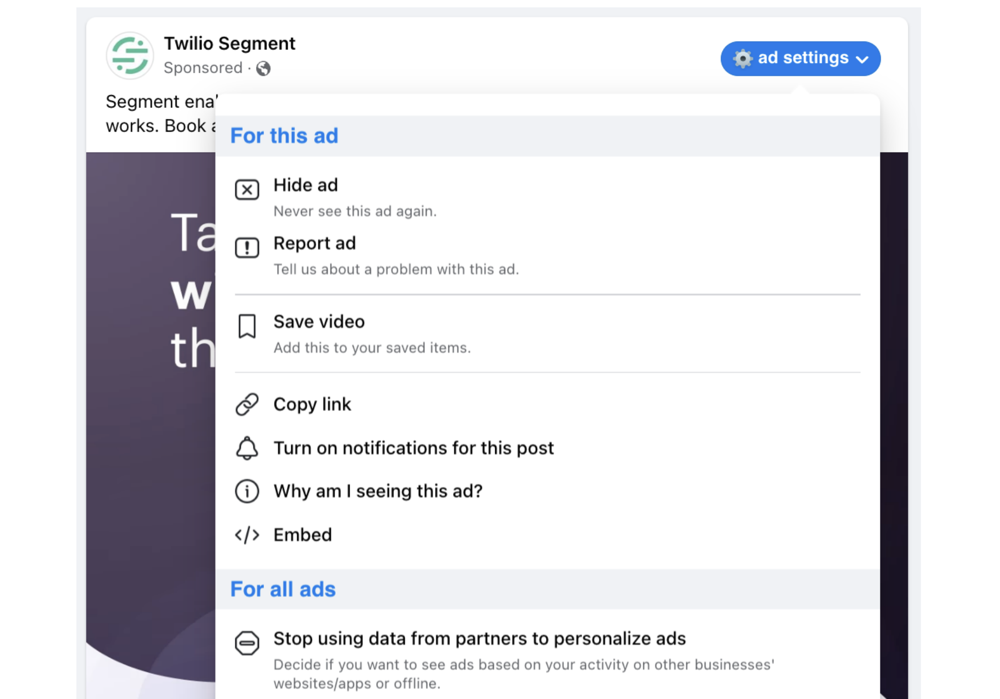
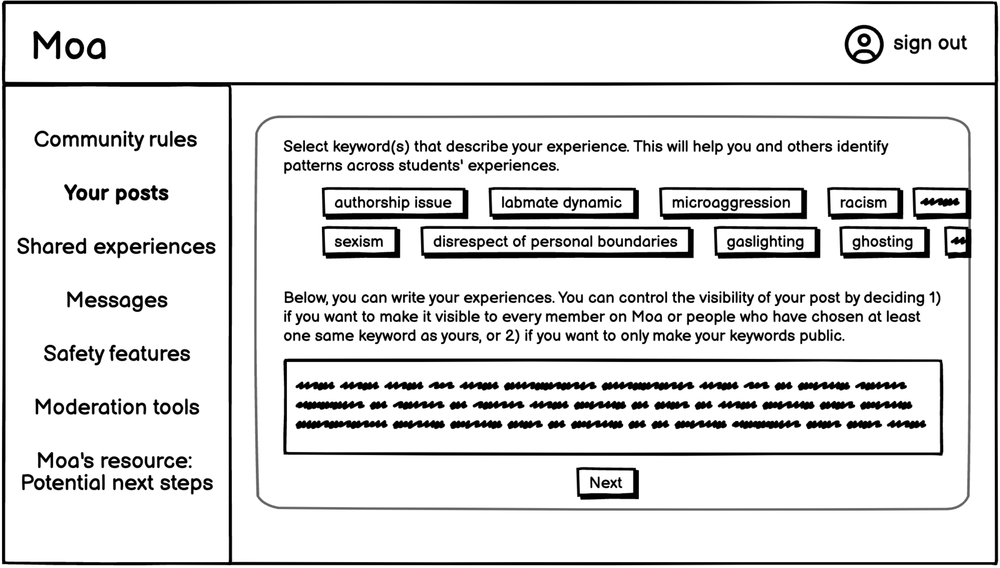

GitHub: trusttri
Google Scholar: Jane Im
Medium: @imjane
LinkedIn: Jane Im
(I deleted X for various reasons.)
Vacation in Europe! Slow in responding to emails until the end of June.
Misc: Photos of me being happy after my defense, with some of my favorite people in academia, haha!
[ I'm very thankful and excited to share that I will be joining CISPA Helmholtz Center for Information Security, an institution within the Helmholtz Association, as a tenure-track faculty member in Fall 2025! I'll be recruiting several PhD students, postdocs, and research interns soon, thanks to CISPA's generous funding. (I'll write a post about recruiting in early July. Please keep an eye out for it if you're interested in joining my group.) A big thank you to everyone who has helped me, especially my advisor! 😊 ]
I recently finished my Ph.D. at the University of Michigan School of Information and Department of Computer Science & Engineering. My advisor was the incomparable Kentaro Toyama.
My goal is to give users stronger agency over their online interactions and data—especially as emerging technologies increasingly threaten to undermine it. One of my core research contributions is tackling this by bringing in a consent-centered approach to technology design. Consent is fundamentally about giving an individual maximum agency to decide whether and how an interaction should occur, regardless of their position in a power dynamic. For example, sex education emphasizes that only after a person with less power—due to factors like physical differences or social norms—grants consent, should the other party engage in a sexual interaction. In short, consent ensures that the weakest power-holder can exercise their agency.
My research has shown how centering the consent of users—who often hold less power than system creators—in designing and building technologies results in a new class of systems that better support users’ nuanced needs around privacy, safety, and agency. I have:
- theorized what affirmative consent is—drawing from feminist literature, which stresses a culture of care and impacts on marginalized groups, I proposed a theoretical framework of affirmative consent to reimagine social platforms (CHI 2021)
- built consentful systems and interfaces—e.g., Moa, a platform that enables sensitive information-sharing among people with less power, by letting users flexibly and precisely carve out an audience per post/comment through "consent boundaries"; consent-granting mechanisms regarding tech companies' data collection and algorithmic inferences (CHI 2023, CHI 2024)
I have published in CHI, CSCW, and PoPETs. My research has been recognized with a Meta Research PhD Fellowship (selected on my fourth try), University of Michigan Barbour Scholarship, EECS Rising Star, and two honorable mentions.
Selected Full Papers

Jane Im, Kentaro Toyama

Sumit Asthana, Jane Im, Zhe Chen, Nikola Banovic
CHI 2024

Jane Im, Ruiyi Wang, Weikun Lyu, Nick Cook, Hana Habib, Lorrie Cranor, Nikola Banovic, Florian Schaub
CHI 2023
Invited by FTC to present to policymakers at PrivacyCon 2024

Jane Im, Jill Dimond, Melody Berton, Una Lee, Katherine Mustelier, Mark Ackerman, Eric Gilbert
CHI 2021
Selected Archival Extended Abstracts


Jane Im, Himanshu Zade, Steve Oney, Pamela Wisniewski, Kentaro Toyama
CHI 2024 Extended Abstract (Panel Proposal)